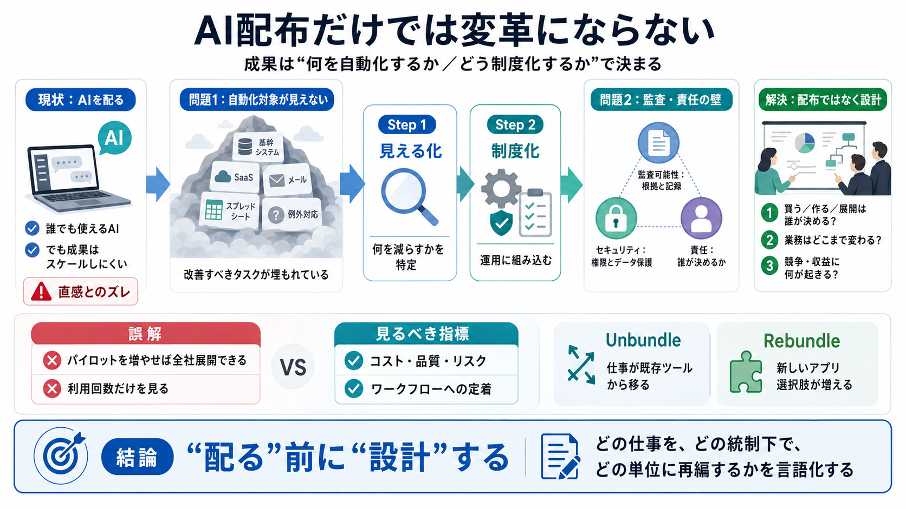

Moving Enterprise AI From Pilots to Payoff
Agentic AI Generative AI Intelligent automation News # Moving Enterprise AI From Pilots to Payoff How businesses ca…

Agentic AI Generative AI Intelligent automation News # Moving Enterprise AI From Pilots to Payoff How businesses ca…
# AI Eats the World — Benedict Evans | SuperAI 2026 ## SuperAI 3460 subscribers 94 likes ### Description 4557 views Pos…
Summary: Benedict Evans argues that generative AI is already comparable in importance to the internet or smartphones, wh…
Artificial Intelligence, ProductivityBenedict Evans [...] Benedict Evans Benedict Evans # AI, tools and transformation…
Read More Artificial IntelligenceBenedict Evans GenAI’s adoption puzzle GenAI’s adoption puzzle Generative AI chatbo…